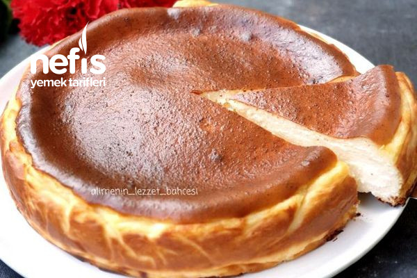

San Sebastian Cheesecake Recipe

Ingredients:
- 500g cream cheese
- 200g heavy cream
- 200g granulated sugar
- 4 large eggs
- 15g all-purpose flour
- 1 tsp vanilla extract
- 1/2 tsp salt
Instructions:
- Preheat your oven to 200°C (390°F).
- Grease and line a round baking pan.
- In a mixing bowl, combine the cream cheese and sugar. Mix until smooth.
- Add the eggs one at a time, mixing well after each addition.
- Pour in the heavy cream and mix until the batter is well combined.
- Gently fold in the flour, vanilla extract, and salt until just incorporated.
- Pour the batter into the prepared baking pan.
- Bake in the preheated oven for about 40-45 minutes or until the top is golden brown.
- Remove from the oven and let the cheesecake cool to room temperature.
- Chill in the refrigerator for at least 4 hours before serving.
Serving:
Slice and serve the San Sebastian Cheesecake as is or with a dusting of powdered sugar.
Enjoy your delicious San Sebastian Cheesecake!
